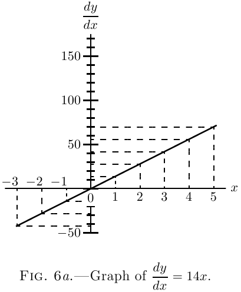

Agora represente graficamente esses valores em alguma escala conveniente, e obtemos as duas curvas, Fig. 6 e Fig. 6a.
 Compare cuidadosamente as duas figuras, e verifique por
inspeção que a altura da ordenada da
curva derivada, Fig. 6a, é proporcional à inclinação da
curva original, (Veja aqui sobre inclinações de curvas.)
Figura 6, no valor correspondente
de $x$. À esquerda da origem, onde a curva original
se inclina negativamente (isto é, para baixo da esquerda
para a direita) as ordenadas correspondentes da curva
derivada são negativas.
Ora se olharmos de volta para aqui, veremos que
simplesmente diferenciar $x^2$ nos dá $2x$. De modo que o
coeficiente diferencial de $7x^2$ é exatamente $7$ vezes tão grande quanto
o de $x^2$. Se tivéssemos tomado $8x^2$, o coeficiente
diferencial teria saído oito vezes tão grande
quanto o de $x^2$. Se pusermos $y = ax^2$, obteremos
\[
\frac{dy}{dx} = a × 2x.
\]
Se tivéssemos começado com $y = ax^n$, teríamos tido
$\dfrac{dy}{dx} = a×nx^{n-1}$. De modo que qualquer mera multiplicação por
uma constante reaparece como uma mera multiplicação quando
a coisa é diferenciada. E o que é verdade sobre
multiplicação é igualmente verdade sobre divisão: pois se,
no exemplo acima, tivéssemos tomado como constante $\frac{1}{7}$
em vez de $7$, teríamos tido o mesmo $\frac{1}{7}$ saindo
no resultado após a diferenciação.
Alguns exemplos adicionais.
Os seguintes exemplos adicionais, plenamente elaborados,
permitirão a você dominar completamente o processo de
diferenciação aplicado a expressões algébricas ordinárias,
e permitirão a você resolver sozinho os
exemplos dados no fim deste capítulo.
(1) Diferencie $y = \dfrac{x^5}{7} - \dfrac{3}{5}$.
$\dfrac{3}{5}$ é uma constante adicionada e some (veja aqui).
Podemos então escrever de imediato (2) Diferencie $y = a\sqrt{x} - \dfrac{1}{2}\sqrt{a}$.
O termo $\dfrac{1}{2}\sqrt{a}$ some, sendo uma constante adicionada;
e como $a\sqrt{x}$, na forma de índice, se escreve $ax^{\frac{1}{2}}$, temos (3) Se $ay + bx = by - ax + (x+y)\sqrt{a^2 - b^2}$,
ache o coeficiente diferencial de $y$ com respeito a $x$.
Como regra uma expressão deste tipo precisará de um
pouco mais de conhecimento do que adquirimos até agora;
vale, contudo, sempre a pena tentar se a
expressão pode ser posta em forma mais simples.
Primeiro devemos tentar trazê-la à forma $y =$ alguma
expressão envolvendo apenas $x$.
A expressão pode ser escrita Elevando ao quadrado, obtemos (4) O volume de um cilindro de raio $r$ e altura $h$
é dado pela fórmula $V = \pi r^2 h$. Ache a taxa de
variação do volume com o raio quando $r = 5.5$ pol.
e $h=20$ pol. Se $r = h$, ache as dimensões do
cilindro de modo que uma mudança de $1$ pol. no raio cause uma
mudança de $400$ pol. cúb. no volume.
A taxa de variação de $V$ com respeito a $r$ é Se $r = 5.5$ pol. e $h=20$ pol. isto se torna $690.8$. Significa
que uma mudança de raio de $1$ polegada causará uma
mudança de volume de $690.8$ pol. cúb. Isso pode ser
facilmente verificado, pois os volumes com $r = 5$ e $r = 6$
são $1570$ pol. cúb. e $2260.8$ pol. cúb. respectivamente, e
$2260.8 - 1570 = 690.8$.
Também, se (5) A leitura $\theta$ de um pirômetro de radiação de Féry
está relacionada à temperatura Celsius $t$ do
corpo observado pela relação Compare a sensibilidade do pirômetro nas
temperaturas $800°$C., $1000°$C., $1200°$C., dado que
leu $25$ quando a temperatura era $1000°$C.
A sensibilidade é a taxa de variação da
leitura com a temperatura, isto é $\dfrac{d\theta}{dt}$. A fórmula
pode ser escrita Quando $t=800$, $1000$ e $1200$, obtemos $\dfrac{d\theta}{dt} = 0.0512$, $0.1$ e
$0.1728$ respectivamente.
A sensibilidade é aproximadamente dobrada de
$800°$ a $1000°$, e aumenta de novo cerca de três quartos
(fica cerca de $1{,}75$ vez maior) até $1200°$.
Diferencie o seguinte:
[2]
(1) $y = ax^3 + 6$.
(2) $y = 13x^{\frac{3}{2}} - c$.
(3) $y = 12x^{\frac{1}{2}} + c^{\frac{1}{2}}$.
(4) $y = c^{\frac{1}{2}} x^{\frac{1}{2}}$.
(5) $u = \dfrac{az^n - 1}{c}$.
(6) $y = 1.18t^2 + 22.4$.
Invente alguns outros exemplos para você mesmo, e experimente
a mão em diferenciá-los.
(7) Se $l_t$ e $l_0$ forem os comprimentos de uma barra de ferro nas
temperaturas $t°$ C. e $0°$ C. respectivamente, então
$l_t = l_0(1 + 0.000012t)$. Ache a mudança de comprimento da
barra por grau Celsius.
(8) Achou-se que se $c$ for a potência em velas
de uma lâmpada elétrica incandescente, e $V$ for a tensão,
$c = aV^b$, onde $a$ e $b$ são constantes.
Ache a taxa de mudança da potência em velas com
a tensão, e calcule a mudança de potência em velas
por volt a $80$, $100$ e $120$ volts no caso de uma lâmpada
para a qual $a = 0.5×10^{-10}$ e $b=6$.
(9) A frequência $n$ de vibração de uma corda de
diâmetro $D$, comprimento $L$ e densidade relativa $\sigma$, esticada
com uma força $T$, é dada por Ache a taxa de mudança da frequência quando $D$, $L$,
$\sigma$ e $T$ são variados isoladamente.
(10) A maior pressão externa $P$ que um tubo
pode suportar sem colapsar é dada por Compare a taxa com que $P$ varia para uma pequena
mudança de espessura e para uma pequena mudança de diâmetro
ocorrendo separadamente.
(11) Ache, a partir de primeiros princípios, a taxa com que
o seguinte varia com respeito a uma mudança no
raio:
(a ) - a circunferência de um círculo de raio $r$;
(b ) - a área de um círculo de raio $r$;
(c ) - a área lateral de um cone de comprimento da geratriz $l$;
(d ) - o volume de um cone de raio $r$ e altura $h$;
(e ) - a área de uma esfera de raio $r$;
(f ) - o volume de uma esfera de raio $r$.
(12) O comprimento $L$ de uma barra de ferro na temperatura $T$
sendo dado por $L = l_t\bigl[1 + 0.000012(T-t)\bigr]$, onde $l_t$
é o comprimento na temperatura $t$, ache a taxa de
variação do diâmetro $D$ de um aro de ferro adequado
para ser encolhido sobre uma roda, quando a temperatura $T$
varia.
(1) $\dfrac{dy}{dx} = 3ax^2$.
(2) $\dfrac{dy}{dx} = 13 × \frac{3}{2}x^{\frac{1}{2}}$.
(3) $\dfrac{dy}{dx} = 6x^{-\frac{1}{2}}$.
(4) $\dfrac{dy}{dx} = \dfrac{1}{2}c^{\frac{1}{2}} x^{-\frac{1}{2}}$.
(5) $\dfrac{du}{dz} = \dfrac{an}{c} z^{n-1}$.
(6) $\dfrac{dy}{dt} = 2.36t$.
(7) $\dfrac{dl_t}{dt} = 0.000012×l_0$.
(8) $\dfrac{dC}{dV} = abV^{b-1}$, $0.98$, $3.00$ e $7.47$ potências em velas por volt respectivamente.
(9) \[
\dfrac{dn}{dD} = -\dfrac{1}{LD^2} \sqrt{\dfrac{gT}{\pi \sigma}},
\dfrac{dn}{dL} = -\dfrac{1}{DL^2} \sqrt{\dfrac{gT}{\pi \sigma}}, \\
\dfrac{dn}{d \sigma}
= -\dfrac{1}{2DL} \sqrt{\dfrac{gT}{\pi \sigma^3}},
\dfrac{dn}{dT} = \dfrac{1}{2DL} \sqrt{\dfrac{g}{\pi \sigma T}}.
\]
(10) \[
\dfrac{\text{Taxa de mudança de $P$ quando $t$ varia}}
{\text{Taxa de mudança de $P$ quando $D$ varia}}
= - \dfrac{D}{t}
\]
(11) $2\pi$, $2\pi r$, $\pi l$, $\frac{2}{3}\pi rh$, $8\pi r$, $4\pi r^2$.
(12) $\dfrac{dD}{dT} = \dfrac{0.000012l_t}{\pi}$.
Exercícios II
Respostas